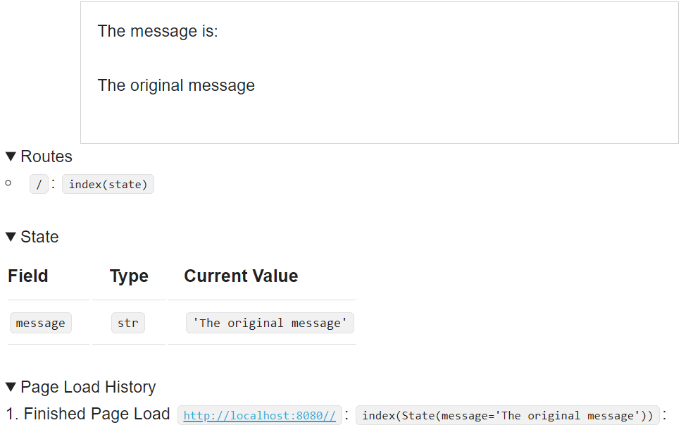

Drafter Quick Start Guide¶
Drafter is an educational interactive graphics Python library. What does that mean?
As a student, you can use Drafter to learn and practice Python by creating a full-stack website.
Let’s look at some code to get us started.
Once you’ve installed Drafter, you only need two lines of code to get started:
1from drafter import *
2
3start_server()
These two lines of code should yield a result like this:
If you visit the url http://localhost:8080/ then you will see a page like this:

The top rectangle is the content of your website, which defaults to the message “Hello World!” and “Welcome to Drafter”. Down below, you see some debug information that will be helpful once we start adding more to our site. For now, you can see that we have a single, default Route.
0. Overview¶
Web servers connect URLs to webpages via routes. We need to begin by creating a route, a function that returns a Page. Each route will correspond to a URL (“uniform resource locator”) that uniquely describes a page of the website. When you visit a URL, the routed function is called and the resulting page is displayed to the user. These pages will have links to other URLs in the same web server.
Another useful feature of a server is that State can be saved between pages. The value from a textbox on the first page can be saved and shown on the second page. A good way to create State in Drafter is to make a dataclass.
1from drafter import *
2from dataclasses import dataclass
3
4@dataclass
5class State:
6 message: str
7
8start_server(State("The original message"))
The code above does not result in a visible change, because we have not created any new routes that take advantage of the state. Let’s make a new route function that can show off the state.
1from drafter import *
2from dataclasses import dataclass
3
4@dataclass
5class State:
6 message: str
7
8@route
9def index(state: State) -> Page:
10 return Page(state, [
11 "The message is:",
12 state.message
13 ])
14
15start_server(State("The original message"))
The new index function has a decorator (@route), just like the dataclass from before.
This decorator adds in the functionality to connect the function to a URL.
The name index is special, making this function the “default” webpage that will be shown.
As a route, the function must return a Page. The ``Page` dataclass constructor is provided by Drafter
and has two parameters: the new state of the page and a list of strings that will be displayed on the webpage.
In this case, the webpage will have two lines of text: “The message is:” and “The original message”.
After you add the code above, you will need to stop the original server and start the new one. If you visit the url http://localhost:8080/ then you will see a page like this:
{kind=link}
1. Another Route¶
We can see the state now, but the state is static - nothing ever changes. Let’s add in another page that changes the state.
1from drafter import *
2from dataclasses import dataclass
3
4@dataclass
5class State:
6 message: str
7
8@route
9def index(state: State) -> Page:
10 return Page(state, [
11 "The message is:",
12 state.message
13 ])
14
15@route
16def change_message(state: State) -> Page:
17 state.message = "The new message!"
18 return Page(state, [
19 "Now the message is",
20 state.message
21 ])
22
23start_server(State("The original message"))
We’ve created a new route named change_message, we could actually visit if we changed the URL in the web
browser. However, that’s inconvenient for users. Instead, we can add a link to the index page to make it easier
for them to navigate there. We can do this easily by just providing a button.
1from drafter import *
2from dataclasses import dataclass
3
4@dataclass
5class State:
6 message: str
7
8@route
9def index(state: State) -> Page:
10 return Page(state, [
11 "The message is:",
12 state.message,
13 Button("Change the Message", change_message)
14 ])
15
16@route
17def change_message(state: State) -> Page:
18 state.message = "The new message!"
19 return Page(state, [
20 "Now the message is",
21 state.message
22 ])
23
24start_server(State("The original message"))
Stopping the old server and running this new one will show that there is a button on the new page.

Once we click the button, we are taken to the new page.

Note that the State has changed and there is now a new item in the Page Load History. This state is not very exciting, though, so maybe we can provide the user with an opportunity to change the message too?
2. Taking Input¶
Let’s add a TextBox to the change_message page. This is a Component, just like the Button we added before.
1from drafter import *
2from dataclasses import dataclass
3
4@dataclass
5class State:
6 message: str
7
8@route
9def index(state: State) -> Page:
10 return Page(state, [
11 "The message is:",
12 state.message,
13 Button("Change the Message", change_message)
14 ])
15
16@route
17def change_message(state: State) -> Page:
18 state.message = "The new message!"
19 return Page(state, [
20 "Now the message is",
21 state.message,
22 "Would you like to change the message?",
23 TextBox("new_message", state.message)
24 ])
25
26start_server(State("The original message"))
The first argument to the TextBox constructor call is the name of the field, which will be necessary to use the value from the field later on.
The second argument is the default value of the TextBox when the page displays, which should be the current message’s value.
To actually use whatever value the user ends up typing into the box, we need to create a new Button and a new route function.
1from drafter import *
2from dataclasses import dataclass
3
4@dataclass
5class State:
6 message: str
7
8@route
9def index(state: State) -> Page:
10 return Page(state, [
11 "The message is:",
12 state.message,
13 Button("Change the Message", change_message)
14 ])
15
16@route
17def change_message(state: State) -> Page:
18 state.message = "The new message!"
19 return Page(state, [
20 "Now the message is",
21 state.message,
22 "Would you like to change the message?",
23 TextBox("new_message", state.message),
24 Button("Save", set_the_message)
25 ])
26
27@route
28def set_the_message(state: State, new_message: str) -> Page:
29 state.message = new_message
30 return index(state)
31
32start_server(State("The original message"))
Now, when the user clicks the Save button, they will be taken to the set_the_message URL.
That route function takes a parameter named new_message, which matches the name of the field we created in change_message.
Drafter will translate the data from the box to the page, and we use that to update the state.
In the return statement of set_the_message, we call the index function to reuse its logic for rendering the basic page.
We could have instead created a new page that linked back to the original index page - the design was really up to us.
{kind=link}
Rerunning the site will allow you to change the message to whatever the user wants.
6. Moving On¶
Check out the documentation of Components to see all that you can add to your output! What will you put on your website?